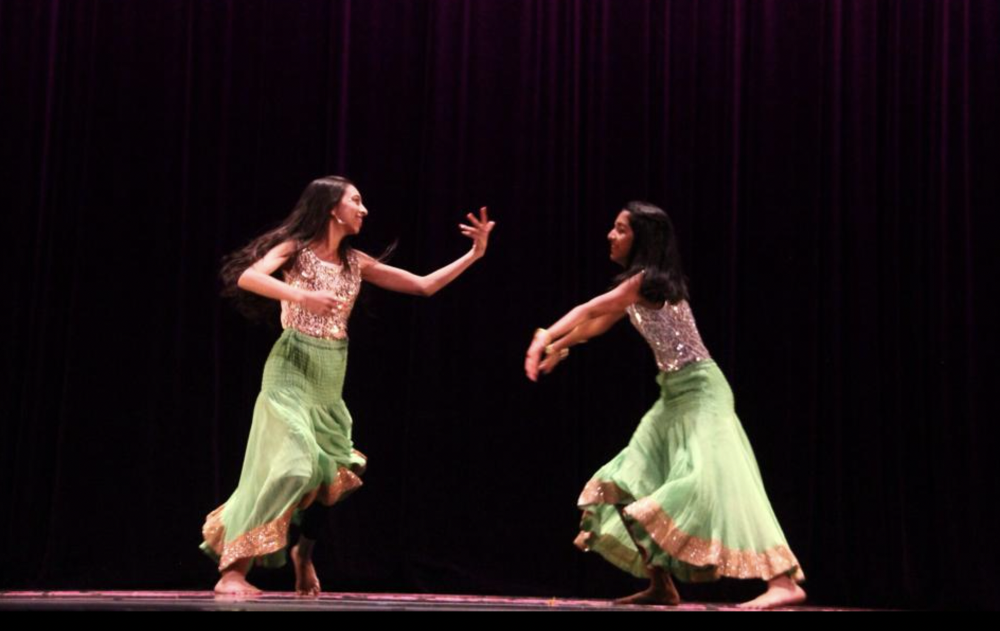
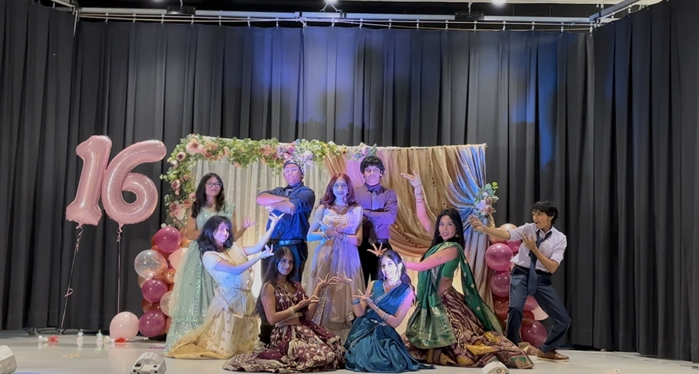
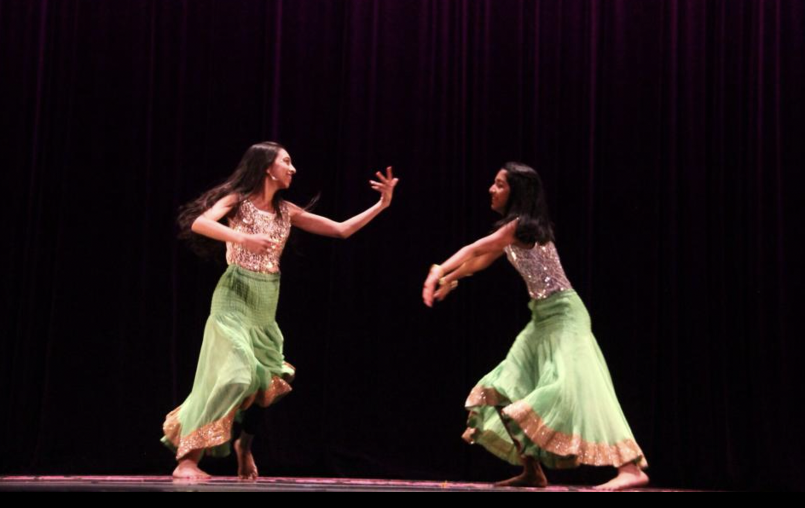
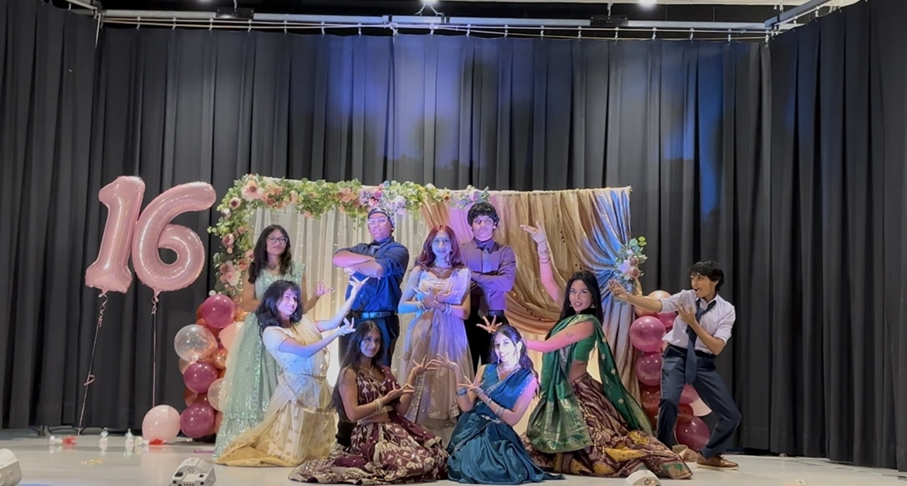

Get to Know Me Beyond My Career
My Passion for Dance 💃🏽
Dance has been a huge part of my life for almost 20 years — not just as a hobby, but as a way to inspire others and express myself creatively. I’ve had the privilege of teaching and choreographing for students ages 5 to 65, specializing in Bollywood, semiclassical, hip-hop, and fusion styles.
I took my first dance class at just three years old, and it has been something I kept in my heart ever since. I started with ballet and tap, then transitioned into jazz and commercial while still keeping my culture alive by learning Bollywood and Bengali folk.
As a dance instructor, I love creating an encouraging, inclusive space where students can grow their confidence, embrace cultural diversity, and discover the joy of movement. I enjoy designing lessons, planning performances, and seeing the excitement when students achieve something they didn’t think was possible.
I love giving back to the community, and through dance I was able to partner up and collaborate with non-profit organizations by performing at their events and aid in raising money for their causes (money for children hospitals, schools, funerals, churches, and much more).
Dance has also taught me valuable life skills — teamwork, time management, problem-solving, and even how to handle challenging situations with patience and grace. These lessons go far beyond the dance floor and shape how I approach my personal and professional life every day.
Plus, dancing is one of my favorite ways to stay active and relieve stress — it’s fun, energizing, and always keeps me smiling!
✨ Some of My Favorite Dance Moments ✨
 


